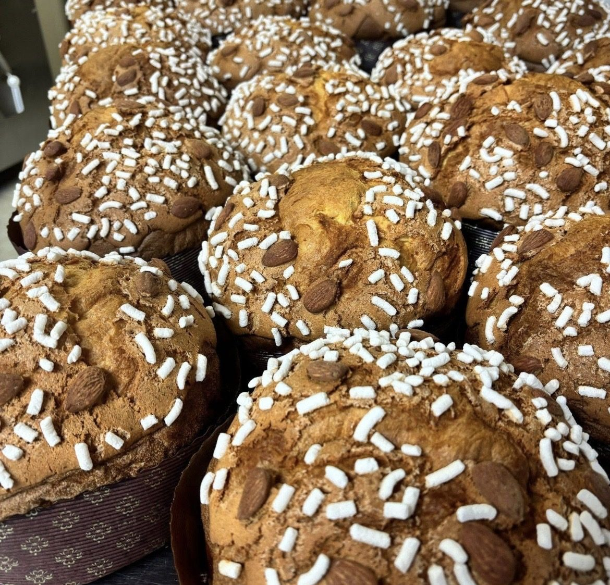

La nostra storia
Il tempo è
il nostro ingrediente.
Ci sono ricette che non si imparano in un giorno: si tramandano, si riprovano, si correggono con pazienza. Chiarato nasce da questa idea, fare le cose bene con il tempo che serve.


Ogni mattina
si ricomincia.
Il laboratorio si accende prima del paese. Gli impasti riposano il tempo che chiedono, le sfoglie si girano a mano, le creme si fanno mentre il forno lavora.
Quando alle sette e mezza si alza la serranda, il banco è già pieno: è la parte del mestiere che nessuno vede, ed è quella che si sente al primo assaggio.
Le materie prime
fanno il resto.
Ogni nostra creazione è realizzata a mano con ingredienti freschi, genuini e accuratamente selezionati. Non è una formula: è il motivo per cui certe lavorazioni richiedono più tempo e certe scorciatoie non le prendiamo.
Dalla colazione alla pasticceria mignon, fino alle torte disegnate sull'occasione che dovranno festeggiare, il criterio non cambia.


Il laboratorio incontra
il bancone del caffè.
Oggi Chiarato è tutte e due le cose insieme: il posto dove si prende il caffè al mattino e quello dove si ordina la torta che verrà portata in tavola nel giorno importante.
Il gesto però resta lo stesso: accogliere, preparare, condividere.
Vi aspettiamo